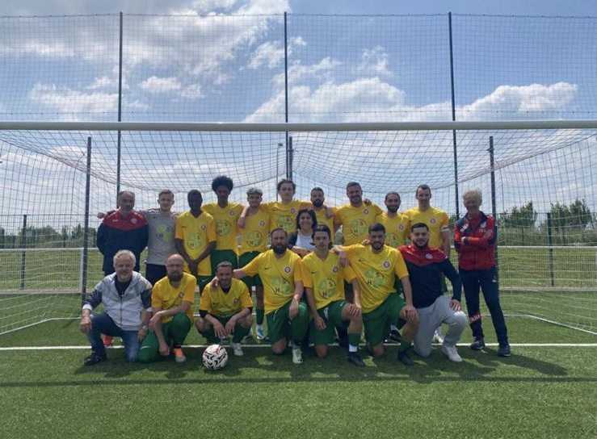
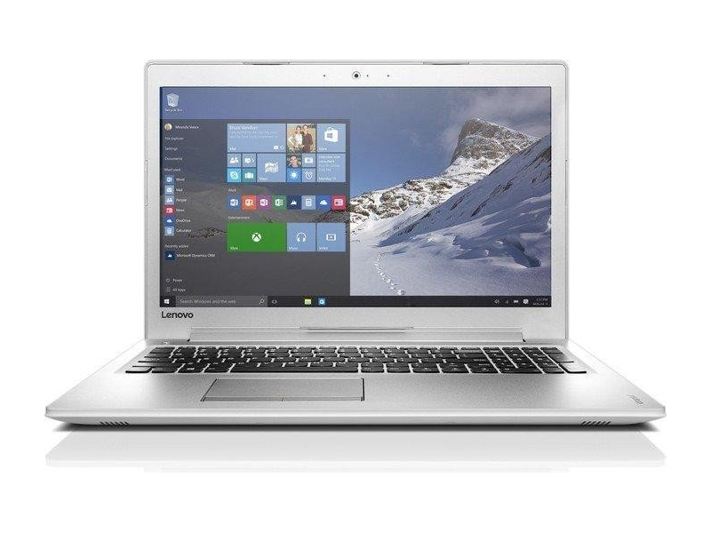
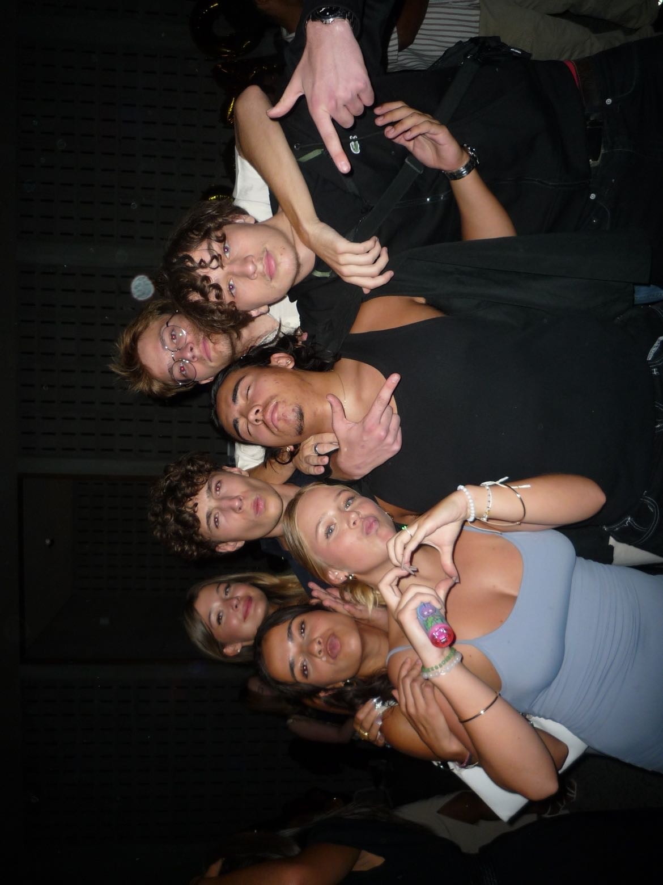

Bienvenue sur mon profil !
- Prénom : Sacha
- Nom : Despinoy
- Age : 18 ans
- Ville : Ermont, 95120
- Etude : En 1ère année d'école de commerce à l'EMLV
Mes passions
Le Sport ⚽
Je suis passionné de sport, j'ai notamment fait du Rugby, Basket, Volley-Ball, Tennis, Futsal et aussi du Football
La Musique 🎵
La musique est l'un de mes passe-temps préférés, j'en écoute lors de trajets, avec des amis, chez moi et même pour m'endormir
Découvrir ma playlistMon ordinateur 💻
Je passe beaucoup de temps devant mon ordi que ça soit pour jouer, regarder des films ou séries, ou bien écouter de la musique
Image référence de mon ordinateur
Mes amis
Quand j'ai du temps libre, je vais souvent voir mes amis pour faire des sorties ou bien des soirées
Les séries 📺
J'adore regarder des séries avant de m'endormir. Mes séries préférés sont Prison Break et Arsène Lupin